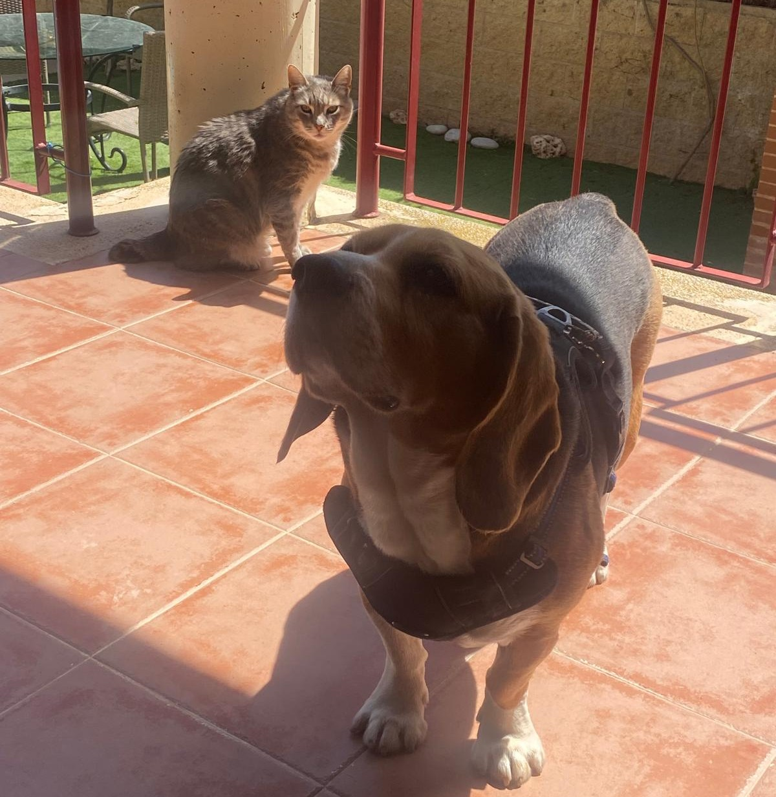
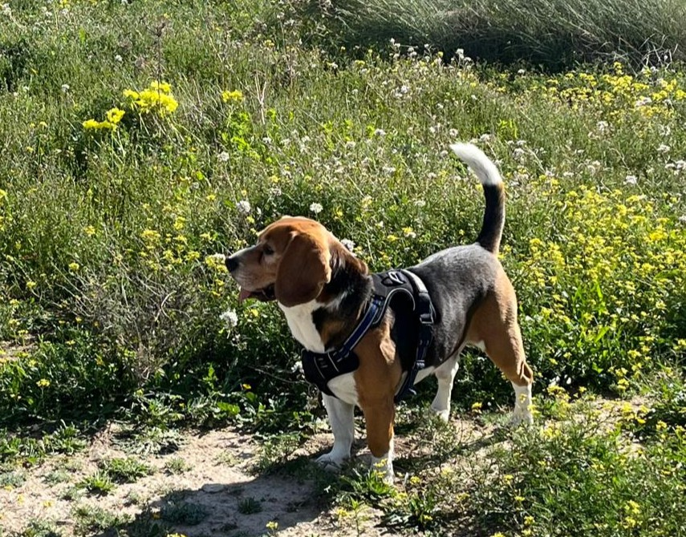
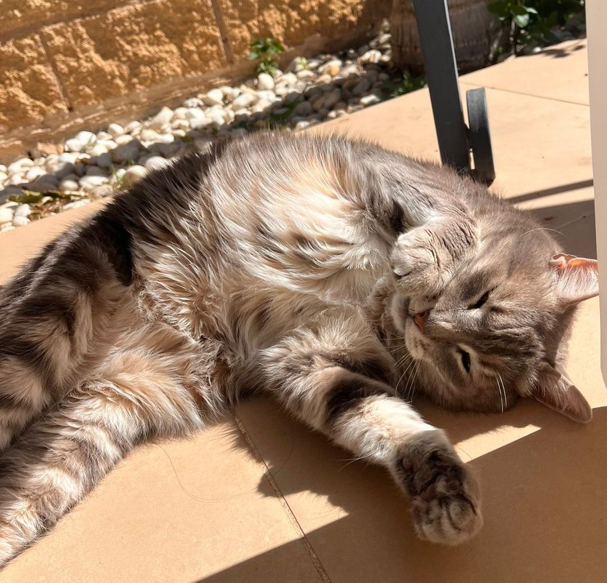
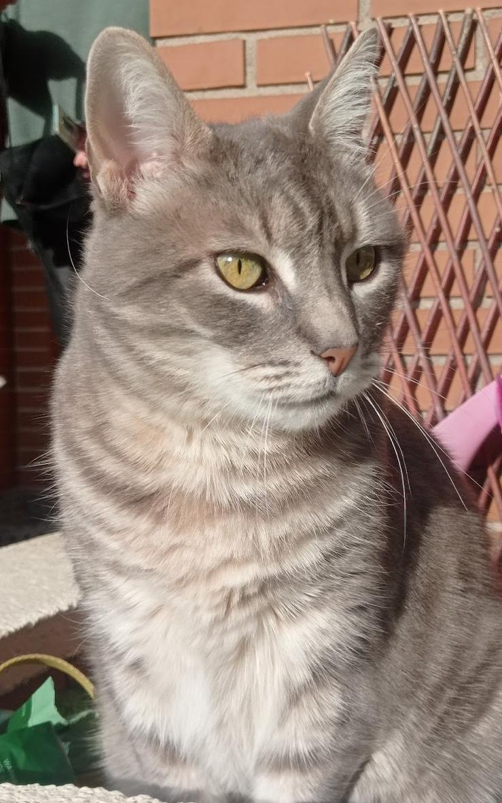
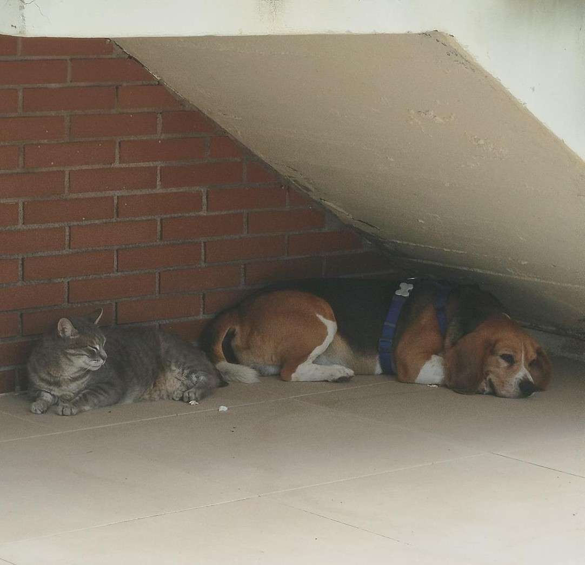
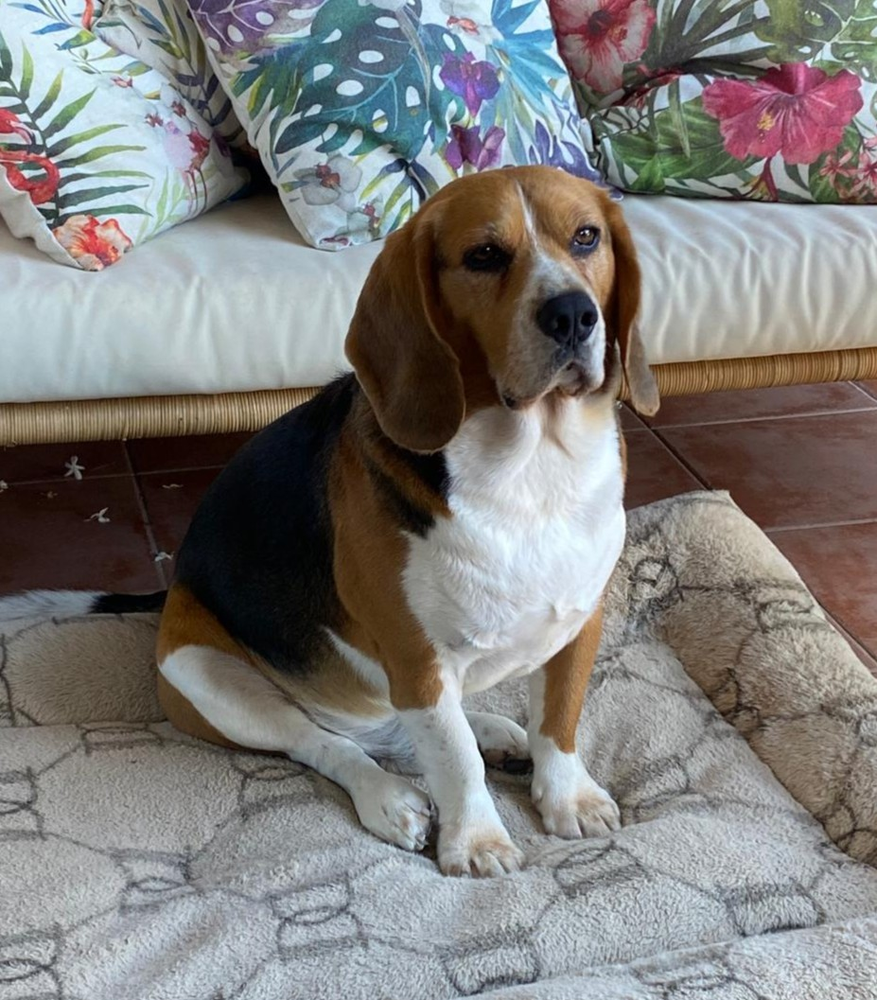

+30 años de experiencia
Trayectoria contrastada cuidando la salud de todo tipo de mascotas.
🐾 Servicio veterinario a domicilio
Más de 30 años cuidando de la salud de tus mascotas con consultas y servicios veterinarios a domicilio en Mutxamel y Alicante.

Trayectoria contrastada cuidando la salud de todo tipo de mascotas.
Nos desplazamos hasta tu casa para que tu mascota no sufra el estrés del transporte.
Un servicio personalizado, tranquilo y adaptado a cada mascota y familia.
Servicios ágiles a precios razonables, sin desplazamientos ni esperas innecesarias.
Cuidados esenciales para tu mascota, en la comodidad de tu hogar.
Revisiones y valoraciones veterinarias generales sin salir de casa.
Pautas de vacunación aplicadas de forma cómoda y segura en tu hogar.
Implantación de microchip de identificación para tu mascota.
Tratamientos antiparasitarios internos y externos adaptados a cada animal.
Extracción de muestras para analíticas que ayudan a valorar el estado de salud.
Controles periódicos para hacer seguimiento de la evolución de tu mascota.
¿Necesitas otro servicio veterinario a domicilio? Consúltanos sin compromiso.
Con más de tres décadas de experiencia, Eliseo ofrece una atención veterinaria profesional, cercana y adaptada a las necesidades de cada mascota y familia.
Su servicio a domicilio permite realizar consultas y cuidados esenciales en un entorno más cómodo y tranquilo para el animal, evitando desplazamientos innecesarios.
Se evita el viaje y la espera en un entorno desconocido.
La consulta se adapta a los horarios y el hogar de la familia.
Tiempo y dedicación exclusivos para tu mascota, sin prisas.
Perfecto para mascotas mayores, nerviosas o con movilidad reducida.
Atendemos principalmente en Mutxamel, Alicante y zonas cercanas, desplazándonos hasta el domicilio de cada familia.
C. Aries, 15, 03110 Mutxamel, Alicante
Dirección de referencia — la atención se realiza principalmente a domicilio.





Escríbenos por WhatsApp o llama directamente, estaremos encantados de ayudarte.